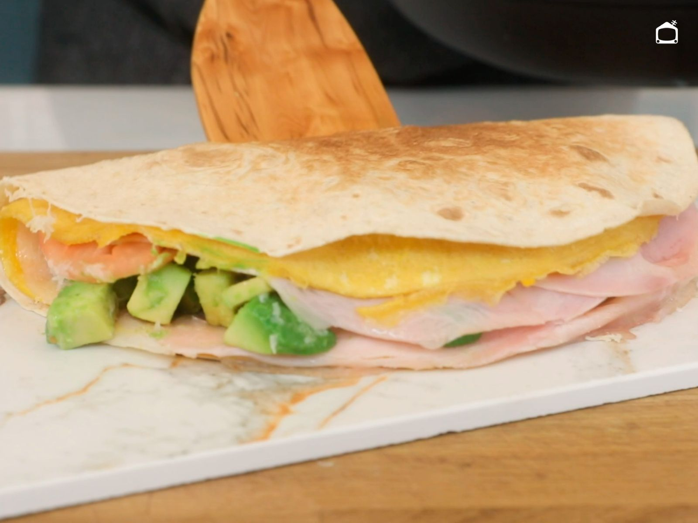

Quesadillas de Jamón y Queso

Las quesadillas de jamón y queso son una cena rápida, sencilla y muy sabrosa. Su tortilla dorada y crujiente junto al queso derretido hacen de esta receta una excelente opción para cuando buscas una comida lista en pocos minutos.